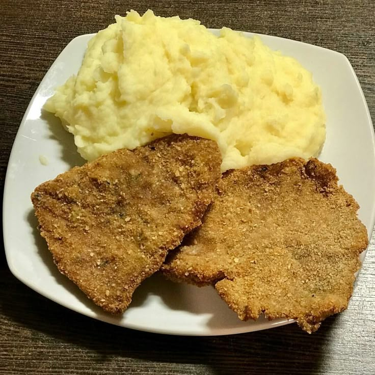

La milanesa con puré es un plato emblemático de la cocina hogareña y de bodegón, compuesto por un filete de carne rebozado y frito (o al horno) acompañado de un puré de papas cremoso con manteca y leche.